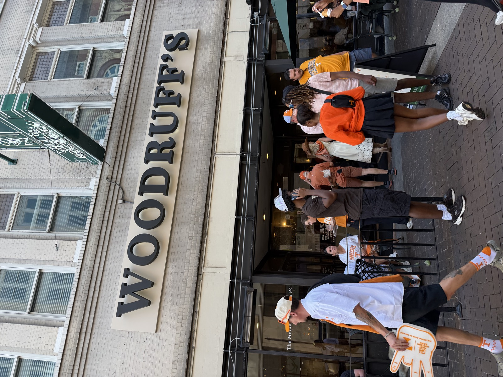
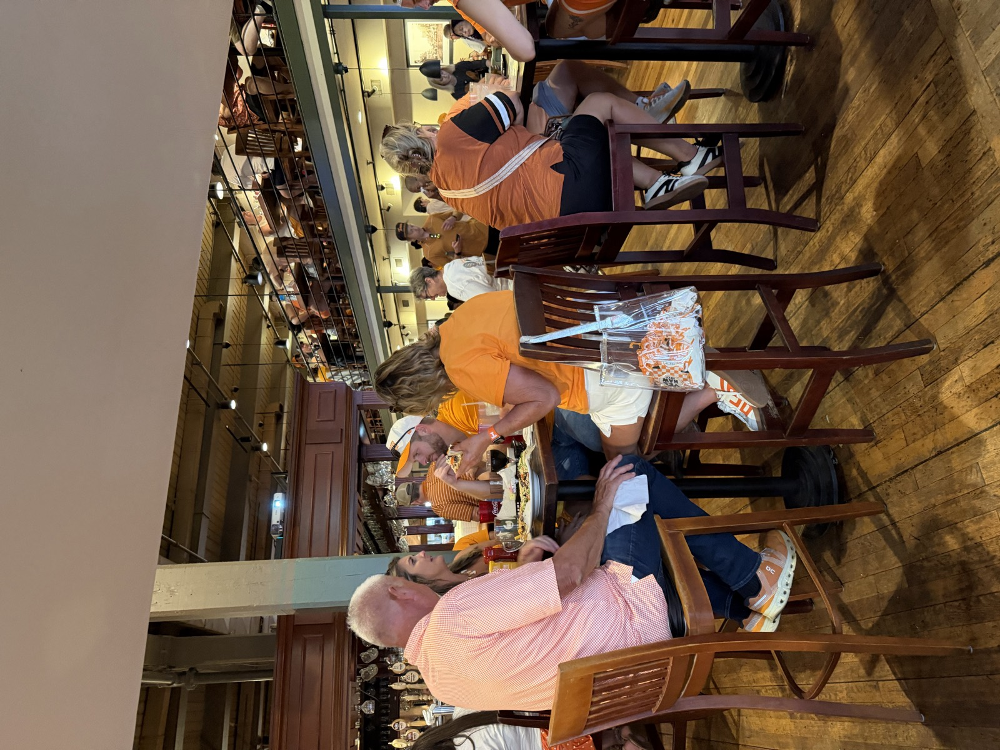
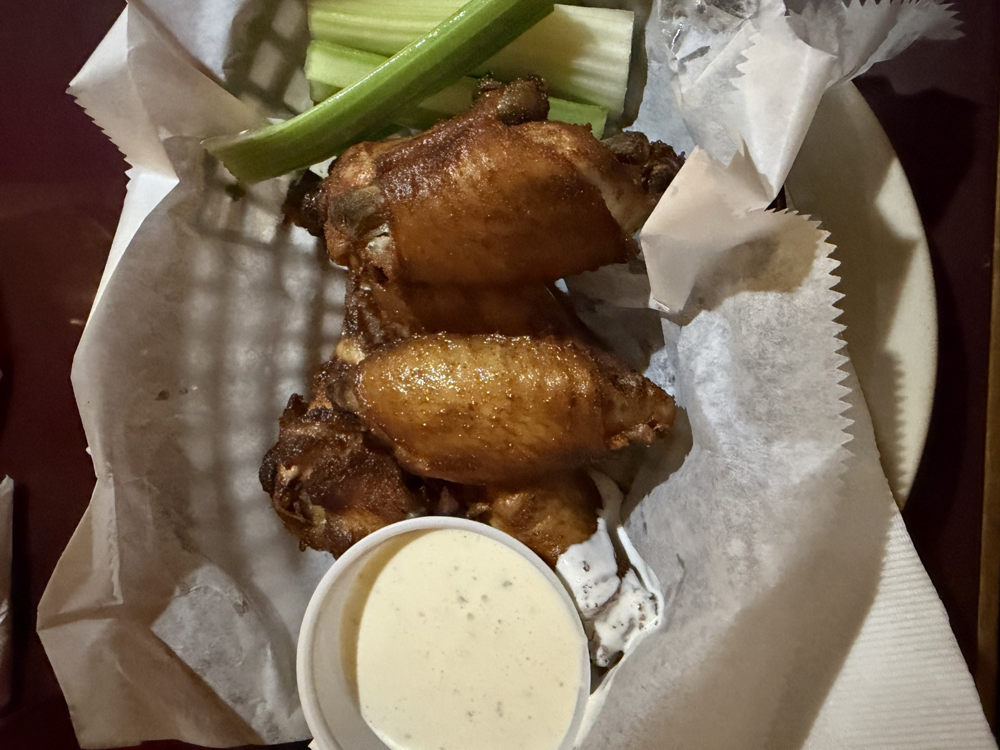
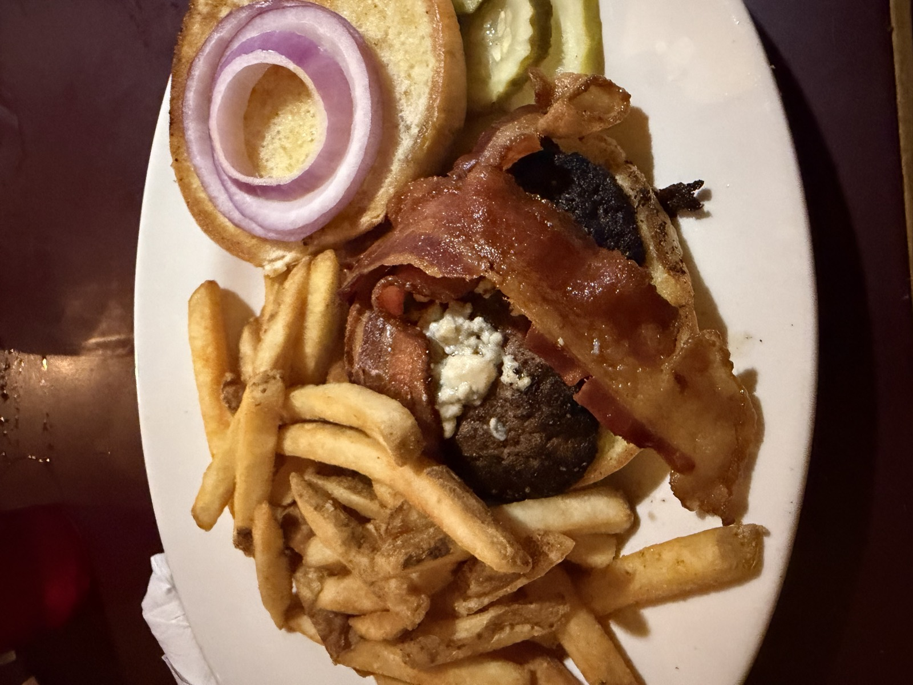

- ⭐ Sam Score: 7.0/10
- 📅 Visited: September 26, 2026
- 📍 Address: 424 S Gay St, Knoxville, TN 37902
- 💰 Price: $$
- 🍽️ Cuisine: Brewery
- 🚗 Parking: Paid parking
- 📞 Phone: (865) 633-8111
- 🌐 Website: downtownbrewery.com/
❤️ Great For:
🎉 Group Friendly
My Video Review
About Woodruff's Downtown Grill & Brewery
Woodruff's Downtown Grill & Brewery sits on Gay Street in downtown Knoxville, in the old Woodruff's building a block up from the Tennessee Theatre. It's a big two-level room with wood floors, a balcony over the main floor and TVs everywhere, and it fills up with orange on Tennessee game days.
What I Ordered
Six smoked wings and the Black & Bleu Burger with fries.
Photos




Pros & Cons
👍 Pros
- Cool area
- Lots of TVs
👎 Cons
- Slow
- Busy during Vols games